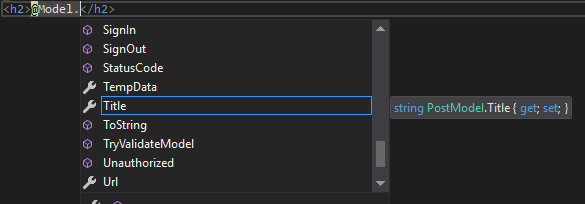

Routing is the system that matches URLs to Razor pages. Like most page-centric frameworks, the primary routing system in ASP.NET Razor Pages is based on matching URLs to file paths, starting from the root Razor Pages folder, which is named Pages by default.
How URLs are matched
When a Razor Pages application starts up, a collection of Attribute Routes (familiar to anyone who has used them in ASP.NET MVC 5 or MVC Core) is constructed, using the file and folder paths rooted in the Pages folder as the basis for each route's template.
The standard site template includes five pages in the root folder:
About.cshtml
Contact.cshtml
Error.cshtml
Index.cshtml
Privacy.cshtml
A collection of six routes are defined with the following route templates:
""
"About"
"Contact"
"Error"
"Index"
"Privacy"
By default, the route templates are generated by taking the virtual path of each content page and then removing the root folder name from the start and the file extension from the end.
Index.cshtml is considered the default document in any folder, so it has two routes defined - one for the file name without the extension, and one with an empty string representing the file. Therefore, you can access Index.cshtml by browsing to both http://yourdomain.com/ and http://yourdomain.com/index.
If you create a folder named Test and add a file named Index.cshtml to it, a further two routes will be defined with the following templates:
"Test"
"Test/Index"
Both of these routes will be mapped to the same virtual path: /<root>/Test/Index.cshtml.
However, if you now add a file called Test.cshtml to the root pages folder and attempt to browse to it, an exception will be raised:
AmbiguousActionException: Multiple actions matched.
The following actions matched route data and had all constraints satisfied:Page: /Test/Index
Page: /Test
As the exception message says, it is an error to have a single URL mapped to multiple actions or routes. The framework has no way of knowing which page to call. You can disambiguate between routes by adding route parameters and/or constraints to the template.
Areas
Areas were introduced to Razor Pages in ASP.NET Core 2.1. Routes to resources in areas have the name of the area as the first segment of the URL.
Areas
Adminstration
Pages
Index.cshtml
Reports.cshtml
Production
Pages
Index.cshtml
Pages
About.cshtml
Contact.cshtml
Error.cshtml
Index.cshtml
Privacy.cshtml
The additional routes created for the content in the areas is as follows:
"Adminstration"
"Administration/Index"
"Administration/Reports"
"Production"
"Production/Index"
The Areas folder and the Pages folder do not feature as part of the route template.
Changing the default root folder
You can use configuration to change the root folder for Razor pages. The following example changes the root folder from the default Pages to Content:
public void ConfigureServices(IServiceCollection services)
{
services.AddMvc()
.AddRazorPagesOptions(options => {
options.RootDirectory = "/Content";
});
}
Note that you cannot change the root folder for pages located in areas.
Route Data
Let's say you have created a blog. You may have a page called Post.cshtml in your root pages folder in which you display the content of specific posts. You provide a series of links on your home page to individual posts, and each one includes a value in the URL to identify the specific post to retrieve from the database. You could supply this value as a query string value (www.myblog.com/post?title=my-latest-post), or you could add it as Route Data - a segment in the URL that plays no part in matching files on disk e.g. /my-latest-post in www.myblog.com/post/my-latest-post. The last segment, or parameter is an arbitrary piece of data passed in the URL. The Route Data approach is preferred for a number of reasons, among which it is more readable - especially if you have a number of parameter values - and it is more search engine-friendly.
Route Templates
Route Data parameters are defined in a Route Template as part of the @page directive in the .cshtml file. To cater for the title value in the example above, the declaration at the top of the Post.cshtml file will look like this:
@page "{title}"
The template created for this route is "Post/{title}". The {title} part of the template is a placeholder that represents any value added to the URL after post/. The template definition must appear in double quotes, and the parameter must be enclosed in curly brackets or braces.
In this example, the value is required, so you cannot just browse to /post. You must provide a value in the URL to match the "title" segment, otherwise you will get a status code of 404 - Not Found. However, you can make the parameter optional by adding a ? after it:
@page "{title?}"
Or you can provide a default value for the parameter:
@page "{title=first post}"
There is no limit to the number of parameters you can add to a route. It is common to see blog post urls include the year, month and day of publication as well as the title. A route definition that accomplishes this might appear as follows:
@page "{year}/{month}/{day}/{title}"
The following words are reserved and cannot be used as names for route parameters:
actionareacontrollerhandlerpage
Accessing route parameter values
Route parameter values are stored in a RouteValueDictionary accessible via the RouteData.Values property. You reference values by their string-based key:
@RouteData.Values["title"]
The potential problem with this approach is that it relies on referencing values by strings, which are prone to typographical errors, resulting in runtime errors. The recommended alternative is to bind the values to properties on a PageModel. To do this, you can add a public property of a suitable data type to the page model class and a parameter to the OnGet() method with the same name and data type as the route parameter:
public class PostModel : PageModel
{
public string Title { get; set; }
public void OnGet(string title)
{
Title = title;
}
}
You assign the parameter value to the public property, which makes it available on the Model property in the content page:
@page "{title?}"
@model PostModel
@{
}
<h2>@Model.Title</h2>
The key reason for recommending this approach is that you benefit from strong typing and therefore Intellisense support in IDE's that support it:

Alternatively, you can use the [BindProperty] attribute on the PageModel property with SupportsGet set to true:
public class PostModel : PageModel
{
[BindProperty(SupportsGet = true)]
public string Title { get; set; }
public void OnGet()
{
// the Title property is automatically bound
}
}
Adding constraints
Constraints are an additional means of disambiguating between routes. So far, the only constraint placed on a route parameter value is its presence. You can also constrain route parameters values by data type and range. The following example shows how to constrain a parameter value to an integer data type:
@page "{id:int}"
The id value is both required, and must be an integer. The next example illustrates an optional parameter, which must be a double if a value is provided:
@page "{latitude:double?}"
The next example shows use of the min constraint, that ensures that the value supplied is an int and that it meets a minimum value of 10000. The minimum value is supplied in parentheses:
@page "{id:min(10000)}"
The final example shows how to specify multiple constraints using colons:
@page "{username:alpha:minlength(5):maxlength(8)}"
This template specifies that the username values is required (i.e. is not optional), must be composed of a mixture of upper case and lowercase letters (no numbers or other symbols), has a minimum length of 5 characters and a maximum length of 8 characters.
Override Routes
From ASP.NET Core 2.1 onward, you can use the template to specify an alternative route for a page that has no relationship with the file name. The override route template should start with / or ~/. For example, you may have a page located deep in the folder structure somewhere e.g. Pages/Projects/Building/SOP/Schools/Intro.cshtml that you want to surface at an much easier to remember URL: schools/sop. You do this by specifying the URL pattern in the template:
@page "/schools/sop"
This replaces the file-path-based URL.
You can use a similar approach to add segments to a route. This is achieved by omitting the / or ~/ from the start of the template. The following template will require the user to add /schools to the default route that is generated for the page:
@page "schools"
Friendly Routes
The final piece in the Razor Pages routing jigsaw is based on the "Friendly URLs" feature found in ASP.NET Web Forms (another page-centric development model) which enables you to bypass the tight relationship between URL and the file path and name of the page that's being requested.
Friendly Routes mappings can also be configured by adding options to the RazorPagesOptions.PageConventions collection in the ConfigureServices method in Startup via the AddPageRoute method. In this example, a physical file named Post exists in /Pages/Archive/. You want to enable users to reach it without prepending Archive to the URL, and you want to specify some route parameters. You do that as follows:
services
.AddMvc()
.AddRazorPagesOptions(options =>
{
options.Conventions.AddPageRoute("/Archive/Post", "Post/{year}/{month}/{day}/{title}");
});
The AddPageRoute method takes two parameters. The first is the relative path to the Razor page file without the extension and the second is the route template that maps to it.
Unlike Absolute Routes, Friendly routes are additive, that is they do not replace existing routes. It will still be possible to reach the resource above by navigating to /archive/post. Consequently it is possible to add a "catchall" friendly route without affecting routes generated from physical files. The following example illustrates a route that catches any URL that doesn't map to a physical file and gets the Index.cshtml file to process the request:
services
.AddMvc()
.AddRazorPagesOptions(options =>
{
options.Conventions.AddPageRoute("/index", "{*url}");
}
You might do this, for example, if your Index.cshtml file is responsible for locating and processing Markdown files based on the URL, as is the case with this site.
Other Routing Options
The routing system provides some additional configuration options via properties of the RouteOptions object which can be accessed in the ConfigureServices method. The properties are as follows:
| Property | Type | Description |
|---|---|---|
AppendTrailingSlash |
bool |
Appends a trailing slash to URLs generated by the anchor tag helper or UrlHelper. Default is false |
ConstraintMap |
IDictionary<string, Type> |
Enables the registration of custom constraints via the Add method |
LowercaseUrls |
bool |
URLs are generated all in lower case. The default is false |
LowercaseQueryStrings |
bool |
Query strings are generated all in lower case. The default is false. Will only take effect if LowercaseUrls is also true |
Examples:
services.Configure<RouteOptions>(options =>
{
options.LowercaseUrls = true;
options.LowercaseQueryStrings = true;
options.AppendTrailingSlash = true;
options.ContraintMap.Add("Custom", typeof(CustomConstraint));
});